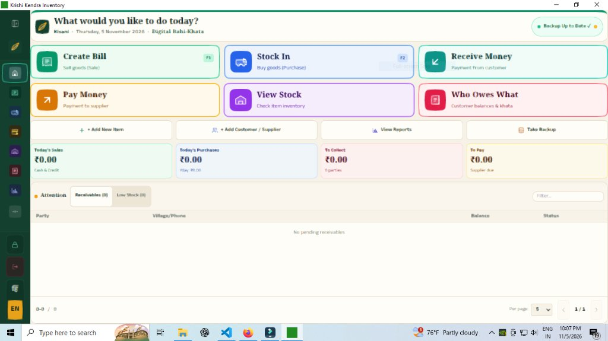
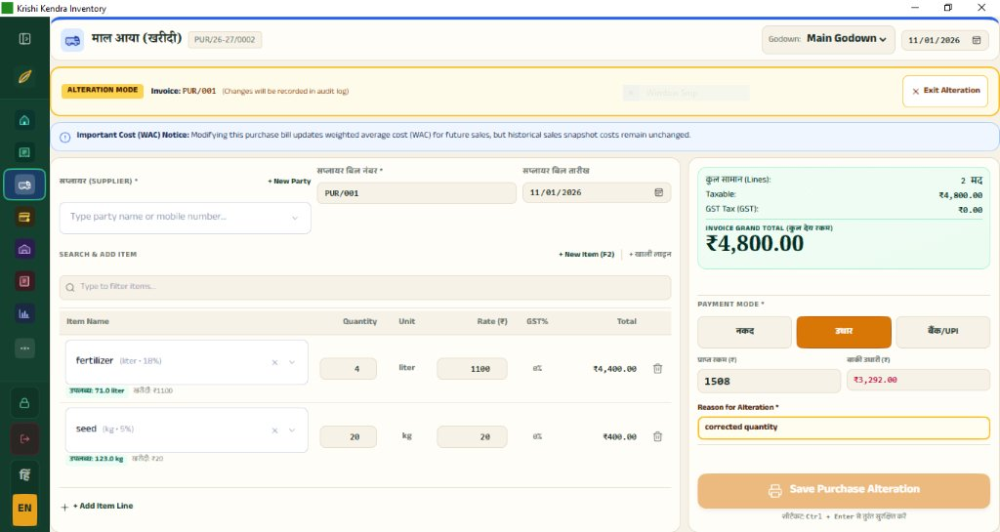
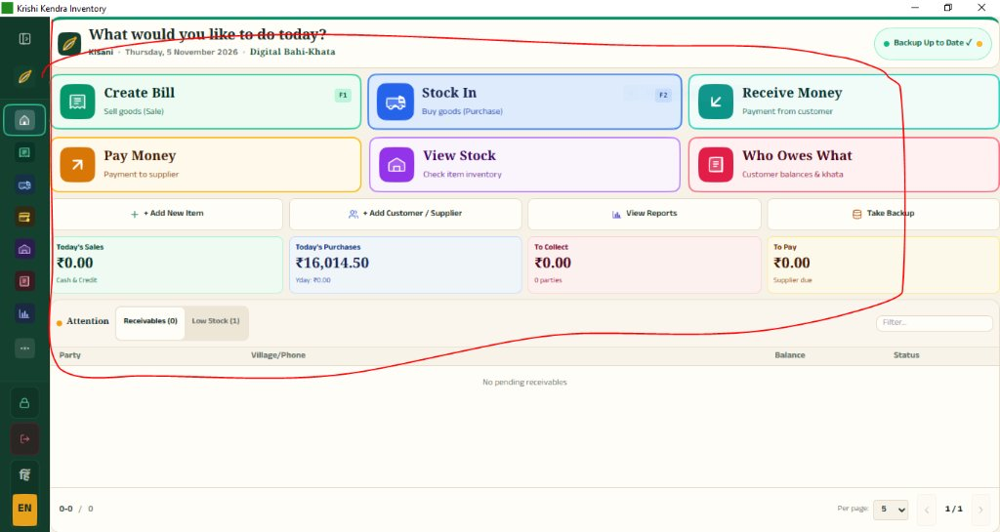

QubiStock™
Enterprise Desktop Inventory & GST Billing Suite
Windows 10 / 11 64-bit
100% Offline Local Database
GST & E-Invoicing Ready
Automated Daily Backups
Official installation instructions, operational security rules, user workflow guides, and disaster recovery reference for businesses and agricultural dealerships.
Need Help? Official Technical Support & Helpdesk
Email: contact@globlcoretech.com |
Support Phone / WhatsApp: +91 78791 30175
1. System Requirements & Installation Guide
1.1 System Requirements
| Component |
Minimum Specification |
Recommended Specification |
| Operating System |
Windows 10 (64-bit, Build 19041+) |
Windows 11 (64-bit) |
| Processor |
Intel Core i3 / AMD Ryzen 3 (Dual Core 2.0 GHz) |
Intel Core i5 / AMD Ryzen 5 or faster |
| Memory (RAM) |
4 GB RAM |
8 GB RAM or higher |
| Storage Disk |
500 MB free space (SSD recommended) |
1 GB free space for database growth & automated backups |
| Display Resolution |
1280 × 720 (HD) |
1920 × 1080 (Full HD, 100% scale) |
| Internet Connection |
Not required for daily operations (Runs 100% offline) |
Required only for downloading software updates from GitHub |
1.2 Step-by-Step Installation on Client Laptops
- Download the Installer: Copy or download the setup file
QubiStock_0.1.0_x64-setup.exe to your client laptop or pendrive.
- Run Setup: Double-click
QubiStock_0.1.0_x64-setup.exe to begin the NSIS installation.
- Windows SmartScreen Notice: If Windows Defender SmartScreen displays a blue banner saying "Windows protected your PC", click on "More info" and then click "Run anyway". (This is normal for newly packaged desktop software).
- Complete Setup: The setup will automatically extract all system libraries, create desktop shortcuts, and configure local user storage.
- Launch: Click the desktop shortcut "QubiStock" or find it in the Windows Start Menu.
Database Location & Safety Note
All business records, invoices, stock, and passwords are saved locally in:
%APPDATA%\com.krishikendra.dev\inventory.db
This directory is isolated from the program installation folder. Updating or reinstalling the application will
NEVER overwrite or erase your company database.
2. First-Time Setup & Security Rules
2.1 Initial Configuration Wizard
When QubiStock is opened for the first time, you will be guided through a 3-step setup:
- Shop Profile: Enter your Business / Shop Name (e.g. "Shri Ram Krishi Kendra"), Phone Number, State Code, GSTIN (optional if unregistered), and Invoice Header details.
- Financial Year & Invoice Prefix: Select your default invoice prefix (e.g.
BILL/26-27/ or PUR/26-27/).
- Owner Security Setup: Enter the business Owner's username and a strong password (minimum 6 characters).
[CRITICAL] Security Recovery Key Safeguarding Rule
Upon completing owner registration, QubiStock displays an emergency
Security Recovery Key (e.g.
RK-XXXX-XXXX-XXXX-XXXX).
- Copy and Print: Click the "Print Key" button or write it down in your business physical diary.
- Single-Use Security: If the owner ever forgets their password or username, this key is the only way to reset the master account and recover credentials.
- Neither staff nor external hackers can bypass this Argon2 encrypted recovery lock.
2.2 Operational Security Rules
- 5-Attempt Automatic Lockout: If an incorrect password is typed 5 times in a row, the login panel locks down for 5 minutes. This lock persists across laptop restarts.
- Staff vs Owner Roles (RBAC):
- Owner (व्यवस्थापक): Full privileges, viewing purchase prices, profit/loss calculations, audit logs, supplier payment authorizations, and period locking.
- Staff (कर्मचारी): Can bill customers, check stock, and record customer receipts. Sensitive supplier purchase costs, margins, and owner passwords are automatically masked.
- Append-Only Audit Log: Every alteration, price modification, deleted bill, or payment is recorded permanently in the tamper-proof audit journal with timestamp and user ID.

Figure 1: QubiStock Executive Dashboard showing Sales, Purchases, Cash/Credit totals, and Attention tabs.
3. Comprehensive Module Operations Manual
3.1 Stock In & Purchase Recording
Use the "Stock In (Purchase)" screen to record goods received from distributors and manufacturers:
- Select Supplier: Choose from existing suppliers or click
+ New Party to add on-the-fly.
- Supplier Invoice Number & Date: Record the distributor's printed bill number and invoice date.
- Add Line Items: Search items by name, barcode, or category. Enter quantity, packaging unit (bag, liter, kg), and purchase rate.
- GST Calculation: GST (CGST/SGST or IGST) is calculated automatically based on whether the supplier is intra-state or inter-state.
- Payment Mode: Choose Cash, UPI/Bank, or Credit (उधार).
- Save Purchase: Press Ctrl + Enter to save. Stock is immediately added to the warehouse ledger and weighted average cost (WAC) is refreshed.

Figure 2: Purchase & Stock Inward screen with multi-line calculations, unit conversions, and payment options.
3.2 Sales Billing & Invoicing (POS)
- Instant Customer Lookup: Search customer by mobile number or name. For walk-in counter sales, select "Cash Customer".
- Zero-Oversell Protection: QubiStock strictly prevents billing items that have insufficient physical stock, eliminating phantom inventory deficits.
- Multi-Unit Conversions: Seamlessly sell by bag, kg, gram, or liter. Units are automatically converted to base ledger equivalents.
- Invoice Printing: Supports 3-inch thermal roll printers and Full A4/A5 laser invoices with customizable company logo, bank details, and QR codes.
3.3 Payment & Receipt Settlements (Digital Khata)
The Payments & Receipts module handles debtor/creditor ledger adjustments:
- Payment Received (Customer): Filtered exclusively to customers. Select a customer to view their total pending credit and individual unpaid bills.
- Payment Made (Supplier): Restricted to Owners. View distributor balances and pending supply invoices.
- Bill Linking: Click any pending bill in the table to auto-fill the bill number and remaining amount, ensuring precise invoice-to-payment matching.

Figure 3: Payment settlement window featuring outstanding bill matching and real-time ledger balance updates.
3.4 Bill & Payment Alteration Workflow
QubiStock provides a safe, audited alteration mode for correcting errors without deleting audit trails:
- Flexible Search: Invoices can be looked up using either slashes or dashes (e.g.
PUR/01 or PUR-01) or the supplier's original bill number.
- Paid Bill Protection: If a purchase or sales bill already has payments recorded against it, QubiStock permits updating item quantities while preserving payments and crediting any differential balance to the party ledger.
- Mandatory Reason for Alteration: Every alteration requires entering a brief reason (e.g. "Corrected quantity as per physical count"), permanently logged in the audit journal.
3.5 Automated Backups & Disaster Recovery
- Dual-Location Redundancy: Configure both a local primary backup folder and a secondary removable USB pendrive in Settings.
- Pre-Update Safety Backup: The system automatically takes a complete database snapshot before any update is applied.
- 30-Day Rolling Retention: The software keeps 30 timestamped historical backups, automatically pruning older files to conserve disk space.
3.6 In-App GitHub Updates (Zero-Downtime)
When updates are released on GitHub:
- An in-app modal appears showing the new version number, release date, and changelog.
- Clicking "अभी अपडेट करें (Update Now)" creates a pre-update backup, downloads the signed binary, and restarts the application.
- 100% Data Preservation: All historical parties, stock, bills, and settings remain untouched.
4. Troubleshooting & Technical Support
4.1 Frequently Asked Questions & Quick Troubleshooting
| Issue / Symptom |
Likely Cause |
Resolution |
| Application will not open or shows SmartScreen warning |
Windows SmartScreen protecting against newly downloaded setup |
Click "More info" → "Run anyway". Verify that Microsoft Edge WebView2 runtime is enabled (standard on Win 10/11). |
| Forgot Owner Password |
Owner misplaced login credentials |
On the Login screen, click "पासवर्ड भूल गए? / Forgot?", enter the printed Recovery Key, and set a new password. |
| Printer not detected or cuts paper incorrectly |
Thermal printer driver missing or wrong page width |
Navigate to Settings → Printer Setup. Choose your printer from the dropdown and select 3-inch (80mm) or A4 mode. |
| Database corruption warning on startup |
Abrupt computer shutdown while saving data |
The emergency Database Integrity Guard will automatically detect this and allow 1-click restore from your latest verified backup. |
4.2 Official Technical Support & Maintenance Contact
For any technical assistance, on-site setup, customization, or training, reach out directly to the software development engineering team:
© 2026 GlobalCore Tech LLP. All rights reserved. QubiStock™ is a trademark of GlobalCore Tech LLP.